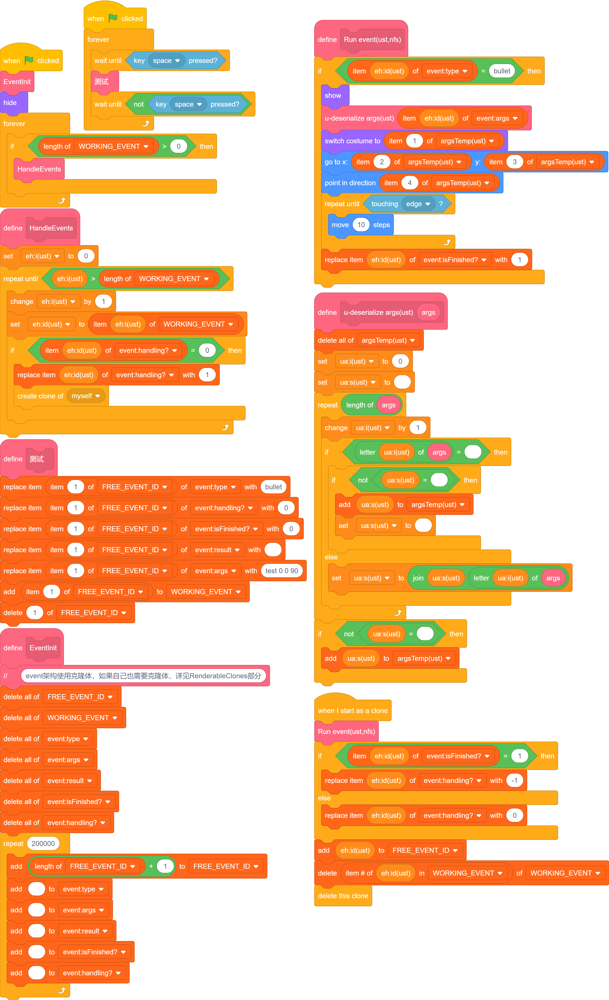
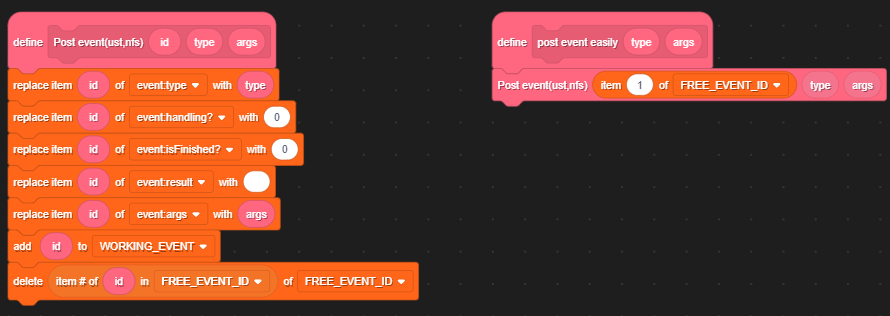
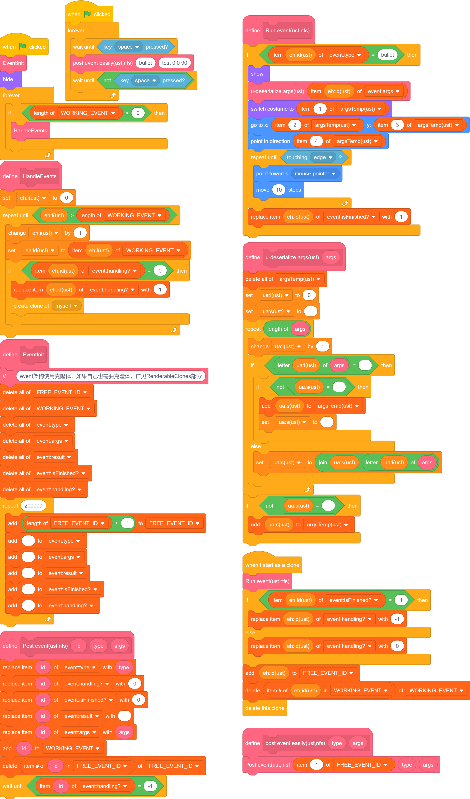

Events
话接上文 好像不是上文，反正差不多，我们实现了 command 表，能够向新线程单独传参了。
我们的目的是创建类似“函数对象”的东西，同时能做到“二次修改”。（后面将提到它的作用。）
总之，如果你学过 Java 的 Event，那这部分应该很好理解。（大概吧。）
实现等待线程的终止
command->event
之前使用变量传递参数，这使得我们无法再获取新建克隆体信息的更新，也就阻止了我们进一步开发。
所以我们应使用 列表。
将之前传递许多参数改为传递多个列表，一般分为type、args，为了标注event对外信息，新建result、isFinshed?、handling?。
写成 command 太长，我不演了。直接上 Event。（这部分与先前没有功能上的差异，只是增减了列表并修改了名称。）

点此测试
总的来说，我们确实没实现啥，接下来我们会对子弹发射进行限制并增强：子弹会面朝鼠标进行转动修正、上一发子弹撞墙后才允许下一发。
等待的到来
我们已经有了 isFinished，只要记录它就好了，我们这里为了使参数更加稳定，进行了一次封装。

这样，我们发布Event时就不用指定id了（图左），而是按照既定方案寻址（图右）。
之后，经过简单的修改，我们实现了 等待。
本来想放图的，但是太占地方了。
追踪！
由于暂时不用URM，而且目前几乎没有交互部分，所以可以随便写。 比上一步就多了一个模块，就一块放图了。

甚至不到150模块。
点此测试
实现返回值
Event架构本身难以实现即时更新类的功能，例如碰撞造成伤害及相关内容。但是对于有序的不限时行为，能有更好的处理。
...
扩展
这部分是我从使用这个架构一年多直到现在汇总出的一些好用的内容。 我会加上大致时间。
无返回值Event
在最原始的 Event 架构中，我们没有使用 scratch 的多线程（虽然我知道它是假的）。
但众所周知，scratch 每帧执行的次数有限，往一帧里多塞一些内容总会加快它的效率的。
...
...
多端Event
当你使用多角色...
页面Event
...
EventListeners/分类器
作用：运行无指定对象，但指定了种类的内容。
...
Event换头以及Event归类
作用：对于已有对象，强制类型转换。
...
EventTriggers/触发器
作用：将无指定对象的 Event 指定对象。
...